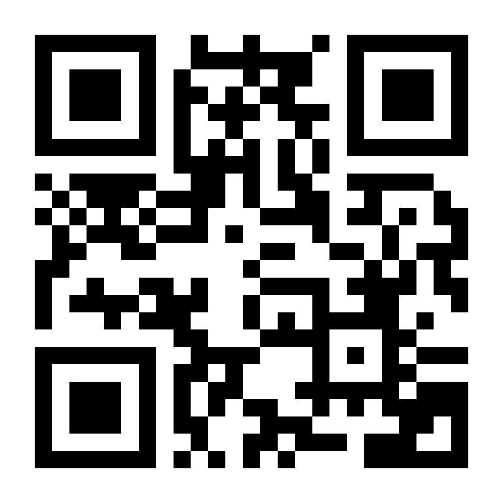

Reglas
Indice de reglas
Normas permisivas
Normas de seguridad
Normas de convivencia
Normas de vestimenta
Normas prohibitivas
Normas permisivas
Usar ropa diferente a la del uniforme único y especialmente los fines de semana y días festivos.
Los empleados le podrán hacer mantenimiento a las maquinarias (únicamente si tienen permiso de sus superiores y conocimiento o el título correspondiente para la tarea a desarrollar)
Podrán utilizar su aparato móvil dentro de los establecimientos con el fin de atender una emergencia.
Se podrá celebrar fechas importantes tales como cumpleaños, aniversarios, etc durante un tiempo determinado fuera del espacio laboral.
Los empleados podrán hacer uso de los equipos de PC si lo requieren o si se les ha ordenado.
Los empleados podrán decorar el ambiente de las distintas instalaciones, únicamente en ocasiones especiales.
Los empleados podrán elegir un género de música para el ambiente pero solo un empleado por día.
Los empleados podrán utilizar el tiempo de sus descanso en el momento en el que deseen (No todos a la misma vez).
Los empleados podrán elegir qué tipo de aseo deben de realizar pero solo una vez en un día de la semana pero al elegir no podrá realizar ese mismo deber los días restantes.
Se podrá dar ideas o sugerencias para mejorar todos nuestros establecimientos.
Normas de seguridad
Salvaguardar la información de la empresa.
Comunicar a tus superiores cualquier condición insegura al personal de la empresa.
Velar por el beneficio de la empresa por encima del beneficio de los clientes.
Hacer buen uso de las máquinas proporcionadas por la empresa.
Comunicar a tus superiores cualquier condición insegura en cuanto a los bienes y servicios prestados dentro de la empresa.
Comunicar a tus superiores cualquier situación que ponga en riesgo la integridad de los trabajadores o clientes de la empresa.
Usar equipos de protección individual a la hora de preparar alimentos dentro de la empresa ya sea para clientes o consumo propio.
Usar equipos de protección individual al momento de reparar cualquier aparato tecnológico de la empresa o al hacerle mantenimiento.
Utiliza herramientas y equipos prestados por la empresa de manera adecuada, ordenada y eficaz.
Evitar el afán y la prisa a la hora de atender a los clientes con los servicios y productos que ofrece la empresa.
No portar ningún tipo de armas dentro de la empresa.
Normas de convivencia
Brindar un trato gentil, respetuoso y amable con los compañeros de trabajo.
Brindar un trato gentil, respetuoso y amable con los que visitan la empresa.
No divulgar información privada y personal de los compañeros de trabajo.
Evita los excesos de confianza con los clientes.
Vigila y protege tu salud y la de los clientes en todo momento.
Mantén limpio y ordenado tu lugar de trabajo, uniforme e implementos de trabajo.
Respetar la intimidad y la privacidad de los clientes.
Respetar la intimidad y la privacidad de los trabajadores.
No usar las claves o carnets de otros compañeros al momento de ingresar a la empresa.
Normas de vestimenta
Usar pantalones de color neutro o pantalon empresarial todos los dias menos fines de semana y dias festivos (Estos dias es de uso opcional)
La camisa de la empresa es de uso obligatorio todos los días exceptuando fines de semana y días festivos (Estos días será de uso opcional)
Zapatos completamente tapados (Preferiblemente zapatillas elegantes o tacones en el caso de mujeres)
Usar el gorro suministrado por la empresa a la hora de preparar cualquier tipo de alimento dentro de la empresa a menos que sea productos de consumo propio. (En tal caso el gorro pasa a ser opcional)
Mantener a la mano pañuelo prestado por la empresa en caso de necesitar limpiar un lugar u objeto.
Llevar el uniforme siempre limpio y muy bien puesto.
Llevar siempre ropa de cambio para cambiarse al finalizar la jornada laboral (Esto con el fin de evitar que la imagen de la empresa se vea comprometida fuera de las instalaciones)
El uso de las camisas o el vestuario fuera del uniforme debe ser respetuoso y no debe ser ofensivo para ninguna etnia, religión, género o cultura del país.
No se podrá bajo ninguna circunstancia modificar el uniforme de trabajo con estampados, broche, estampas u otros objetos.
Normas prohibitivas
No será permitido consumir alimentos fuera de los horarios determinados
No robar a los compañeros de trabajo y/o clientes
No robar útiles de la empresa
No robar dinero de la empresa
No cometer actos suicidas o que comprometan tanto la vida del trabajador como la de integridad de los clientes y demás personas.
No cometer homicidio dentro de las instalaciones.
Proteger a las personas menores antes abusos de otras personas de mayor edad.
No fumar ni consumir grandes cantidades de alcohol dentro de la empresa
No vender productos con alcohol a menores de edad.
Tratar con paciencia a los clientes.
No vestir desnudo ni permitir el ingreso de personas desnudas dentro de la empresa.
Tratar con respeto tanto a compañeros de trabajo como a clientes que visitan la empresa.
No tratar con superioridad a ningún tipo de personal empresarial y mucho menos a clientes.
Proteger la integridad de todos los clientes que visitan la empresa.
No dirigirse con mal vocabulario a los clientes ni a los compañeros de trabajo.
Escanea el siguiente codigo QR para ver la reglas completas en su dispositivo movil
